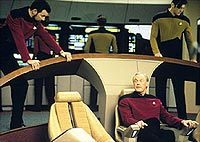
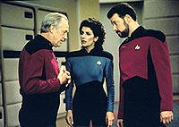
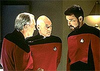
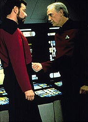
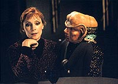

|
MANCHETE
DO EPISDIO
Intriga
Cardassiana alimenta o esprito
familiar da tripulao da Enterprise
Episdio
anterior | Prximo
episdio
Sinopse:
Data Estelar: 46357.4.
Conforme as tenses entre a Federao e os Cardassianos aumentam,
Picard dispensado do comando da Enterprise enviado a uma misso
ultra-secreta. Beverly e Worf tambm so designados e comeam,
junto com o capito, rigorosas sesses de treinamento, embora s
Picard saiba a natureza da misso que eles enfrentaro.
 A
bordo da Enterprise, especulaes sobre a possibilidade do no-retorno
de Picard comeam a surgir quando um novo oficial comandante, o
capito Jellico, da USS Cairo, designado para assumir a ponte,
em lugar de Riker. Jellico s faz por tornar a tripulao mais
ansiosa e incomodada, ao implementar rapidamente vrias mudanas
de procedimento gigantescas a bordo, como uma mudana de trs para
quatro turnos por dia. As modificaes afetam enormemente a rotina
dos tripulantes.
Jellico especialmente duro com Riker e Geordi, o que naturalmente
cria uma grande dose de tenso. Troi usa sua posio como
conselheira para pedir ao capito um pedido de reajuste gradual
para a tripulao, mas Jellico desconsidera sua opinio,
friamente insistindo que a situao com os Cardassianos exige
medidas imediatas. Mais tarde. numa conversa com Picard, Jellico diz
que sente que a guerra com os Cardassianos inevitvel, e que ele
duvida que Picard retornar Enterprise. A nave dele agora, e
ele planeja administr-la do seu jeito.
Quando Picard, Beverly e Worf finalmente embarcam em sua misso,
Picard pode revelar a enorme gravidade da situao. Os
Cardassianos estariam supostamente desenvolvendo armas metagnicas
--vrus geneticamente engendrados que destroem todas as formas de
vida em seu caminho-- em um planeta abandonado, Celtris III. Picard
e sua equipe tm ordens de localizar essas armas e destru-las a
todo custo.
 De
volta Enterprise, Jellico se encontra com gul Lemec, um lder
Cardassiano enviado na esperana de evitar a guerra. Entretanto,
Jellico faz tudo que pode para enfurecer Lemec, fazendo-o esperar
por cerca de uma hora e agindo de forma pouco razovel uma vez que
a reunio comea. Ele usa Riker e Troi para realizar uma estratgia
similar do "bom policial, mau policial", esperando
intimidar os Cardassianos a ponto de eles abandonarem seus planos.
Mas o prprio plano de Jellico parece fracassar quando Lemec revela
que ele tem informao sobre a misso secreta da Federao.
Em Celtris III, Picard, Worf e Beverly sobrevivem difcil
travessia por uma rede de cavernas e finalmente chegam ao seu
destino --uma passagem selada. Eles conseguem, com a ajuda dos
feisers, passar, mas quando entram, descobrem a sala vazia.
Percebendo que a caverna uma armadilha, eles correm para fugir
quando vrios Cardassianos armados atacam. Beverly e Worf escapam,
mas Picard sequestrado e enviado ao lder Cardassiano gul Madred,
que informa que o capito deve responder a todas as perguntas ou ir
morrer.
Comentrios:
"Chain of
Command" no somente uma espetacular abertura para uma
histria de intriga poltica entre os Cardassianos e a Federao.
Mais que isso, ele uma prova viva da premissa que sustenta todas
as sries de Jornada: a de que as tripulaes formam elos
que as tornam verdadeiras famlias.
 Aqui
notamos, de modo semelhante ao que vimos em "The Best of
Both Worlds", o quanto a presena de Picard visceral
para o bom andamento das coisas a bordo da Enterprise. Mais que
isso, vemos como um capito pode fazer toda a diferena entre uma
tripulao harmoniosa e eficiente ou uma em conflito e agonizante.
engraado como a personalidade dos "capites experientes
em Cardassianos da Frota" tm todos traos muito parecidos.
Em alguns aspectos, Edward Jellico lembra muito o capito Maxwell,
de "The Wounded". Ambos so
frios no que concerne a seus oponentes e acreditam em solues
agressivas e belicosas. Felizmente h uma diferena crucial entre
os dois, que dita o tom diferente de cada um dos episdios.
Enquanto Maxwell um capito simptico, retratado como uma vtima
traumatizada de um tempo de guerra, Jellico parece ser ambicioso e
genuinamente arrogante --um sujeito realmente deplorvel.
Ningum discute as habilidades do novo capito. Por esse aspecto,
ele um perfeito estrategista de guerra. As cenas que ele provoca
ao passar ordens a Riker e ao enfurecer seu visitante Cardassiano
nos fazem s vezes at pensar em acreditar que ele saiba o que est
fazendo, apesar do desgosto que temos pela pessoa.
 Entretanto,
em ltima anlise, seus mtodos e seu estilo de comando so to
amorais e agressivos que a tripulao da Enterprise, acostumada ao
bom senso e tica de Picard, no pode tolerar facilmente. E no
fim das contas os Cardassianos se mostraram estar ainda mais
frente, estrategicamente, que o "esperto e experiente"
capito humano.
Apesar do conflito da tripulao com Jellico, Picard incapaz de
ajudar seus subordinados a sarem dessa, e resta a Riker assumir o
comando informal da tripulao, tentando proteg-los do novo
capito. Isso especialmente interessante em razo do desgosto
que Jellico sente pelo primeiro-oficial, gerando uma tenso incrvel
entre os dois oficiais. Tambm bem trabalhada como um todo a
forma como a tripulao se comporta quando perde seu principal
elemento. Data o que se adapta mais rpido, passando a ser o
"favorito" de Jellico. Geordi e os demais se alinham a
Riker.
A poro da histria que lida com o capito caindo na armadilha
Cardassiana interessante e j apresenta elementos que
consagrariam esses aliengenas no universo de Jornada, como
a capacidade extraordinria de suas foras de inteligncia, mas
ainda est para se tornar o principal foco da histria, o que s
acontecer na segunda parte.
Da forma como o episdio foi organizado, ele conseguiu algo
extremamente difcil. Criar uma histria coesa em dois episdios,
mas que ainda assim permite que se veja um sem o outro e ainda assim
apreciar seus elementos. Tentativa semelhante foi feita com "Birthright",
mais frente na temporada, mas o resultado final foi um fracasso
absoluto.
 Trata-se
de um segmento extremamente bem pensado, escrito, produzido e
editado. A nica real crtica feita ao lado tcnico da produo
o trabalho pobre de cenografia nas cavernas de Celtris III. Tambm
irritam um pouco as eternas reciclagens de cenas espaciais (algum
duvidaria que a Cairo seria da classe Excelsior?). Mas, alm disso,
absolutamente nenhuma crtica a fazer. E a excelente histria
supera qualquer entrave tcnico, facilmente elencando "Chain
of Command" como um dos melhores episdios da srie.
Citaes:
Picard - "Can I get you some
coffee, tea?"
("Posso lhe servir um caf, ch?")
Nechayev - "Thank you, no, captain. I'm afraid there is no
time for the usual pleasentries. I'm here to relieve you of command
of the Enterprise."
("Obrigado, no, capito. Temo que no haja tempo para as
amenidades usuais. Estou aqui para dispens-lo do comando da
Enterprise.")
Jellico - "I want you to conduct the exercises personally,
Will. Get it done. ...Ow, and get that fish out of the ready room."
("Eu quero que voc conduza os exerccios pessoalmente, Will.
Quero isso feito. ...Oh, e tire aquele peixe do meu gabinete.")
Jellico - "By the way, ...I prefer a certain ...formality on
the bridge. I'd appreciate it if you wore a standard uniform when
you are on duty."
("A propsito, ...eu prefiro uma certa ...formalidade na
ponte. Eu apreciaria se usasse o uniforme padro quando estiver de
servio.")
Trivia:
 "Chain of Command" apresenta pela primeira vez em Jornada
nas Estrelas a relao entre Bajor e Cardssia. Planejado
inicialmente para ser um crossover da Nova Gerao e de Deep
Space Nine, acabou virando um episdio duplo da Nova Gerao,
pois a exibio do episdio-piloto de DS9 ainda demoraria
um ms.
"Chain of Command" apresenta pela primeira vez em Jornada
nas Estrelas a relao entre Bajor e Cardssia. Planejado
inicialmente para ser um crossover da Nova Gerao e de Deep
Space Nine, acabou virando um episdio duplo da Nova Gerao,
pois a exibio do episdio-piloto de DS9 ainda demoraria
um ms.
O
nome do novo capito linha-dura da Enterprise-D, Jellico, foi o
nome de um capito da frota britnica da I Guerra Mundial.
Uma
cena em que Jellico contava a La Forge que costumava jogar rugby com
o antigo capito do engenheiro da Enterprise-D, Zimbata, da USS
Victory ("Elementary, Dear Data",
"Identity Crisis"), acabou
no cho da sala de edio.
A
partir deste episdio, Deanna Troi comea a alternar o uso do
uniforme da Frota Estelar com suas tradicionais "roupas de aerbica".
Ronny Cox, que interpreta o capito Edward Jellico, conhecido do
pblico por sua atuao nos filmes "Total Recall",
"Robocop" e na srie "Um Tira da Pesada".
Ficha
tcnica:
Histria de Frank
Abatemarco
Roteiro de Ronald D. Moore
Direo de Robert Scheerer
Exibido em 14/12/1992
Produo: 136
Elenco:
Patrick Stewart como
Jean-Luc Picard
Jonathan Frakes como William Thomas Riker
Brent Spiner como Data
LeVar Burton como Geordi La Forge
Michael Dorn como Worf
Gates McFadden como Beverly Crusher
Marina Sirtis como Deanna Troi
Elenco convidado:
Ronny Cox como
capito Edward Jellico
Natalija Nogulich como almirante Nechayev
John Durbin como Gul Lemec
Lou Wagner como Solok
Episdio
anterior | Prximo
episdio
|